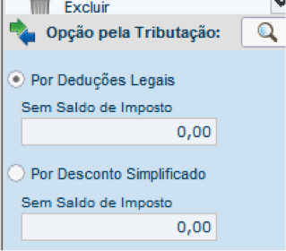

Declaração do Imposto de Renda
IRPF 2015
Tempo de leitura: 10 min |
Passo a passo para micro e pequenos empresários realizarem a declaração do IRPF 2015.
Sobre a Contabilizei: A contabilidade online e inteligente que está ajudando micro e pequenas empresas de todo o Brasil a economizarem tempo e dinheiro. Saiba mais aqui.
Contexto
Chegou a hora de prestar as contas com o leão. Mas calma calma, não criemos pânico.
Declarar o imposto de renda está longe de ser um bicho de sete cabeças. Para facilitar a declaração, elaboramos este artigo com dicas e instruções com os principais passos da IRPF 2015.
Este artigo foi elaborado para você que é dono de uma micro ou pequena empresa e não possui muita complexidade de bens, direitos, recebimentos etc..
Temos certeza que, após ler este artigo, você estará mais seguro e confiante para declarar e transmitir o seu IRPF 2015.
Quem está obrigado a declarar imposto de renda 2015?
Você deve apresentar a declaração de imposto de renda em 2015 se:
- Teve renda igual ou superior a R$ 26.816,55 no ano. Exemplo: retirada de Pró-Labore;
- Obteve recebimento de capital sob alienação de bens, direitos, posse de terrenos e/ou imóveis com valor superior a R$ 300.000,00.
- Teve rendimentos isentos de tributação acima de R$ 40.000,00 no ano. Ex: distribuição de lucros.
- Teve retenção de IR durante o ano, mesmo estando abaixo do valor indicado, pode declarar para restituir se possível.
Dica: recomendo que você faça a declaração de imposto de renda mesmo que esteja dispensado, assim, além de criar um histórico de receita e bens, poderá utilizar para comprovar seus rendimentos :)
Qual é o prazo para entrega da declaração de IRPF 2015?
O período para entrega é de 02 de março a 30 de abril de 2015.
Aconselho fortemente você não deixar para o último dia, pois o sistema de Receita Federal fica sobrecarregado e a transmissão da declaração de imposto de renda pode falhar.
Onde encontrar as informações para declarar o IRPF 2015?
Para declarar o imposto de renda, é aconselhável que você esteja com os seguintes documentos em mãos:
-Informe de Rendimentos
: Você que é sócio de empresa, provavelmente retirou Pró-Labore e/ou a distribuição de lucros da empresa durante o ano de 2014.O seu contador deve lhe enviar este documento que é gerado após a entrega da DIRF da sua empresa.
Confira um exemplo do documento:
Se você não recebeu ainda, solicite ao seu contador o Informe de Rendimentos.
-Demais informes: Se você comprou / vendeu imóvel, realizou aplicações / investimentos ou outros eventos de movimentação do seu capital ou patrimônio, receberá um informe gerado pelo banco ou responsável pelas informações.
-Comprovantes de despesas: gastos com assistência médica, educação etc..
Preciso de um contador para declarar o IRPF 2015?
Não, a maioria dos micro e pequenos empresários conseguem declarar tranquilamente o imposto de renda sem o apoio de um contador.
O passo a passo descrito a seguir descreve as principais etapas da declaração e quais informações devem ser enviadas.
Como fazer a declaração de imposto de renda 2015?
A declaração de IRPF 2015 pode ser realizada através de 2 programas disponibilizados pela Receita Federal:
- Link direto da Receita Federal para baixar os programas
Após instalar, abra o programa do IRPF 2015, pegue uma xícara de café e siga o passo a passo abaixo:
Passo a passo para declarar o IRPF 2015
A seguir, estão as principais etapas para o preenchimento do Imposto de Renda 2015
Abra o programa e clique em "Criar nova declaração".
Escolha uma das opções:
- Importar declaração: somente se você desejar importar os dados da declaração do ano anterior (recomendado)
- Criar nova, sem importar
Etapa "Identificação do Contribuinte"
- escolha a opção Declaração de Ajuste Anual Original
- insira as opções abaixo:
Natureza da Ocupação = 12 - Proprietário de empresa ou de firma individual ou empregador-titular
Ocupação Principal = 120 - Dirigente, presidente e diretor de empresa industrial, comercial ou prestadora de serviços
Etapa "Rendimentos Tributáveis Recebidos de PJ pelo Titular"
Este é o local para você inserir o valor recebido pela retirada de Pró-labore.
A informação pode ser obtida no Informe de Rendimentos, abaixo:
Clique em novo e adicione os "Dados da Fonte Pagadora":
Etapa "Rendimentos Isentos e Não Tributáveis"
Este é o local para você inserir o valor recebido através da distribuição de lucros da sua empresa.
A informação pode ser obtida no Informe de Rendimentos, abaixo:
Insira a informação no campo 05 - Lucros e dividendos recebidos pelo titular e pelos dependentes. Cabe lembrar que este valor não interfere no cálculo do imposto de renda, ou seja, você não paga imposto em cima do valor informado :)
Etapa "Pagamentos efetuados"
Este é o local para você inserir os valores gastos com Educação, Assistência Médica etc que são passíveis de dedução. É importante que você tenha a nota fiscal ou documentos que comprovem os gastos a serem lançados.
Deduções:
Despesas Médicas - Sem Limite - Faq
Dependentes - R$ 2.156,53 por dependente; e R$ 3.375,83 para educação (incluindo graduação e pós graduação) - Faq.
Outras deduções - Faq
Etapa "Bens e Direitos"
Aqui, você deve inserir todos os bens e direitos que estão em seu nome. Isto inclui as quotas que você possui na empresa (verifique seu contrato social ou requerimento de empresário). Carros, imóveis etc também devem ser lançados nesta etapa.
Para inserir as quotas, escolha o item 32 - Quotas ou quinhões de capital.
Revisando a declaração:
No menu à esquerda, clique em "Verificar Pendências".
Acesse o "Resumo da Declaração"
Nessa etapa, poderá ver resumidamente as informações prestadas ao programa e como foi calculado o imposto ou restituição.
É importante ressaltar que nessa etapa, só haverá informações caso tenha sido informado rendimentos tributáveis.
Em cálculo do imposto, caso o programa identifique imposto a restituir, você pode indicar a conta bancária onde deseja receber a restituição.
Por fim, escolha um tipo de declaração:
Por "deduções legais" (Completa): a declaração se torna detalhada. Informa-se rendimentos, gastos com escolas, médicos e outros gastos que podem ser considerados.
Por desconto simplificado (Simplificada): leva em conta apenas os seus rendimentos e dependentes (se houver) e deduz valores correspondentes a cada um.
Dica: clique em ambos para verificar o mais econômico para você. É muito comum que o valor seja R$ 0,00 . Isto significa que você não deve nada a Receita Federal, nem deve ser restituído de valor pago a maior durante 2014.

Últimos passos:
Após tudo informado, grave a declaração.
E, finalmente, selecione transmitir via Internet
Siga os passos do programa.
Conclusão
Declarar o imposto de renda é uma tarefa anual que deve ser realizada com calma e, preferencialmente, não na última hora.
Caso você tenha dúvidas e/ou esteja inseguro para enviar o IRPF 2015, contrate o serviço de um contador especializado em declaração de imposto de renda pessoa física.

Sobre o autor
Vítor Torres é fundador da Contabilizei (o jeito mais fácil e ecônomico de realizar contabilidade), empreendedor e investidor de startups.